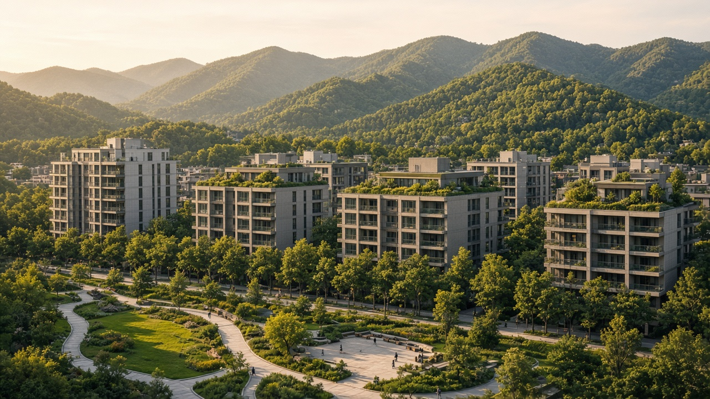

Sustainable Urban Development
दिगो सहरी विकास

Possible subtopics to explore for compact, inclusive, and climate-resilient cities.
दिगो सहरी विकास

Possible subtopics to explore for compact, inclusive, and climate-resilient cities.